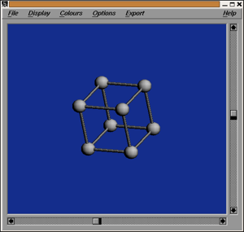
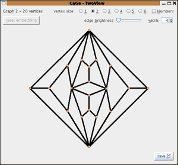

The quadrangulations windows
A quadrangulation is a plane graph with all faces quadrangles. The Euler formula implies that all quadrangulations must have vertices with degree at most 3. Furthermore a simple quadrangulations with at least 4 vertices can not have vertices of degree 1.
General Quadrangulations
In this window you can generate quadrangulations without too strong restrictions efficiently. The main invariant that has to be given is the number of vertices. Furthermore the generation has to be restricted to one of the following 4 classes:
- quadrangulations with minimum degree 2
(for at least 4 vertices these are all simple quadrangulations) - quadrangulations with minimum degree 3
- 3-connected quadrangulations
- 3-connected quadrangulations without 4-cycles that are not the boundary of a face

Quadrangulations with given vertex degrees
Similar to triangulations with given vertex degrees, in this part you can choose the number of vertices and the set of allowed vertex degrees. Furthermore you can give upper and lower limits for the numbers of vertices of each degree that must/may be present in the graph.
The generator used at the moment is designed to work efficiently in case of relatively many allowed vertex degrees. For the future a reimplementation of the algorithm described in Discr. Appl. Math. 128, pages 541-554 is planned. This will be applied in the case of few vertex degrees allowed.

| choosing
a generator window |
||
| the
triangulations windows |
||